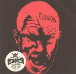

| Artist: | Circle |
| Title: | Tulikoira |
| Label: | Ektro - 033 |
| Length(s): | 43 minutes |
| Year(s) of release: | 2005 |
| Month of review: | [02/2006] |
| 1) | Rautakäärme | 7.05 |
| 2) | Tulilintu | 3.50 |
| 3) | Berserk | 8.03 |
| 4) | Puutiikeri | 24.13 |
Tulilintu is a relatively short track, which shows their liking for bands like Iron Maiden. The singing is not as high, and don't try to follow the lyrics. The singing is not so clear that I can make out what language it is in, but in view of the title, which does sound Finnish, my guess is that it is Finnish after all. By the way, although my reference says Iron Maiden, you may also subtract 10 years or so, and end up in the first half of the seventies because of the fuzz guitar. Indeed, the sound is very much seventies hardrock, except a bit harder and the electronics and loops are certainly not typical for THAT era.
Berserk is a song ripe with tension and whispered lyrics. The build up is slow, with the rhythm section playing a remarkable role on this monotonous song, which does succeed, even with the somewhat formless electronic/ambient middle part. Here, again, I seem to detect some of the looseness of the improvising seventies prog/psyche scene.
Over half of this album is taken up by Puutiikeri. It opens with a plodding rhythm, which strongly reminds me of Black Sabbath. The vocals lie below the music, they are almost magical chants of a kind. The electronics that set in are more in the vein of a low key Ozrics, not something you'd expect here. The band is in no hurry to develop the song, indeed they very much take their time to let the situation develop. Halfway, we get some estranging samples of classical music, followed by some more minutes of improvisation. I was expecting a climax at the end, but it is relatively short. A shame maybe, but it would have been the easy way out.